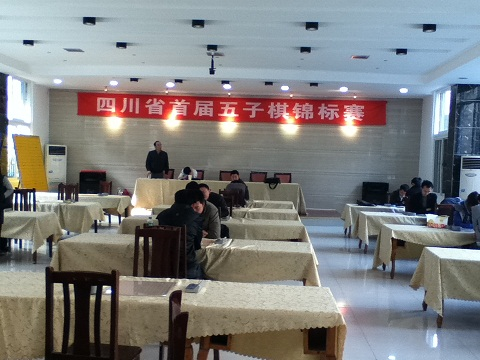
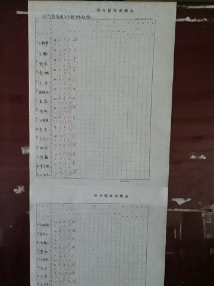
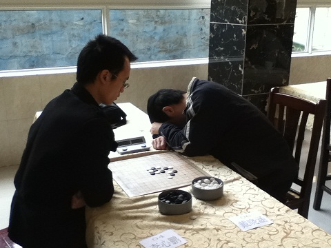
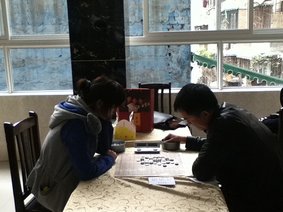
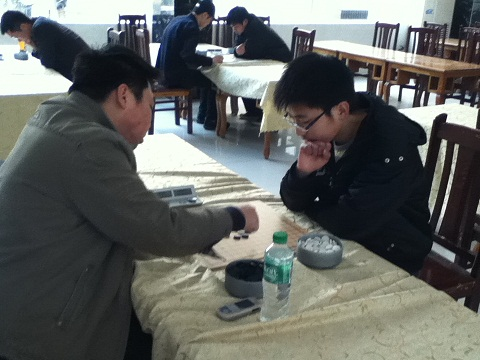
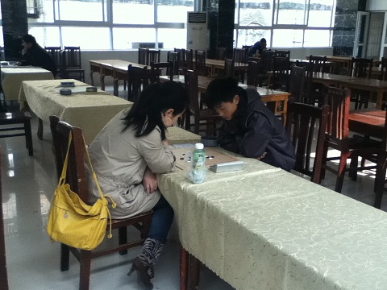
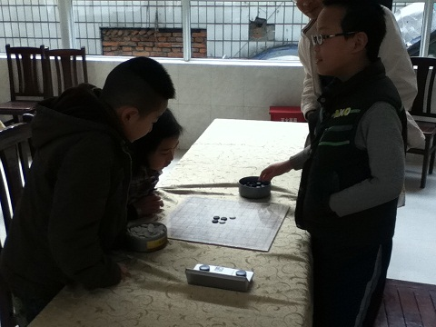

四川省首届五子棋锦标赛第二天
#1 四川省首届五子棋锦标赛第二天 作者：路痴 发表时间：2011-4-10 22:13:57
大家比较关心的。。。积分表要等棋院公布，目前只知道前8；
1-8名分别是：黄圣明，戴晓涵，任继航，聂淼，郭成，陈新，汪清清，王鹏
—————————————————————分割线——————————————————————————
放部分照片。。手机拍的 效果见谅
比赛场地：

积分表：

比赛照片：




未来的希望们：

［ 无尽 于 2011-4-10 22:20:14 时奖励此帖[金币加 100 威望加1］
#2 Re:四川省首届五子棋锦标赛第二天 作者：屏蔽 发表时间：2011-4-10 22:26:46
汪清清好像把陈新赢了，不过看来还是悲剧了。#3 Re:四川省首届五子棋锦标赛第二天 作者：路痴 发表时间：2011-4-10 22:27:34
回楼上，清清确实把风尘杀了。。。然后就遇到小白了
［ 隔世的风 于 2011-8-3 15:48:07 时花50金币砸了你一个臭鸡蛋］
#4 Re:四川省首届五子棋锦标赛第二天 作者：蓝天蓝 发表时间：2011-4-10 23:23:25
恭喜前8名选手#5 Re:四川省首届五子棋锦标赛第二天 作者：极地剑客 发表时间：2011-4-10 23:45:31
小白重出江湖拉~#6 Re:四川省首届五子棋锦标赛第二天 作者：慕容晓文 发表时间：2011-4-11 9:16:27
今年的主题是复出……#7 Re:四川省首届五子棋锦标赛第二天 作者：屏蔽 发表时间：2011-4-11 10:13:11
小白全胜确认。#8 Re:四川省首届五子棋锦标赛第二天 作者：屏蔽 发表时间：2011-4-11 10:14:31
=======上图对应的爱五子棋谱代码如下，以便你拆解：========
h8h9j10i9g9i7k9i11i10k10f10g11f12f11g10h10h11e12j9j8k7k8e8
======================================================

［ 无尽 于 2011-4-11 10:49:32 时花20金币送鲜花一朵］
#9 Re:四川省首届五子棋锦标赛第二天 作者：掌棋宣传员 发表时间：2011-4-11 10:44:17
每次比赛小白都装出一副很弱的样子....#10 Re:四川省首届五子棋锦标赛第二天 作者：灯塔连珠 发表时间：2011-4-11 11:13:22
小白是谁？而且棋谱怎么就一个呀？#11 Re:四川省首届五子棋锦标赛第二天 作者：梧桐风 发表时间：2011-4-11 12:09:18
比赛场所很不错哈，话说楼主又是哪个哈，经常看到LZ提供的信息
#12 Re:Re:四川省首届五子棋锦标赛第二天 作者：小红眼镜 发表时间：2011-4-11 12:18:40
引用：
原文由 梧桐风 发表于 2011-4-11 12:09:18 :
比赛场所很不错哈，话说楼主又是哪个哈，经常看到LZ提供的信息
 LZ是跟小白关系无比密切的人。。。咳咳
LZ是跟小白关系无比密切的人。。。咳咳
#13 Re:四川省首届五子棋锦标赛第二天 作者：好学 发表时间：2011-4-11 12:23:11
冠军和亚军没对弈,可惜啊。#14 Re:Re:四川省首届五子棋锦标赛第二天 作者：梧桐风 发表时间：2011-4-11 12:39:27
引用：
原文由 慕容晓文 发表于 2011-4-11 9:16:27 :
今年的主题是复出……
这位童鞋给大伙介绍一下季军任继航吧
#15 Re:Re:四川省首届五子棋锦标赛第二天 作者：路痴 发表时间：2011-4-11 12:55:22
引用：
原文由 梧桐风 发表于 2011-4-11 12:09:18 :
比赛场所很不错哈，话说楼主又是哪个哈，经常看到LZ提供的信息
场地是在成都棋院2楼；
预备的场地能容纳的人数比较多，可惜参赛的选手数量不够多。。。
我。。。额。。。。
#16 Re:Re:Re:四川省首届五子棋锦标赛第二天 作者：萧翎 发表时间：2011-4-11 13:10:27
引用：与祝楼上同学生日快乐！
原文由 路痴 发表于 2011-4-11 12:55:22 :引用：
原文由 梧桐风 发表于 2011-4-11 12:09:18 :
比赛场所很不错哈，话说楼主又是哪个哈，经常看到LZ提供的信息场地是在成都棋院2楼；
预备的场地能容纳的人数比较多，可惜参赛的选手数量不够多。。。我。。。额。。。。
#17 Re:Re:Re:四川省首届五子棋锦标赛第二天 作者：慕容晓文 发表时间：2011-4-11 13:13:07
引用：
原文由 梧桐风 发表于 2011-4-11 12:39:27 :
任继航啊，不是很了解，不过04年就已经听说了
据当时传闻，他以前是练国象的（曾代表过四川打比赛），后来改下五子棋
初次在见到是04年浙江邀请赛，曹冬考他松月2打必胜，结果脱谱做得曹冬很郁闷，中盘控制得曹冬没想法。眼看棋局就要和了，结果任兄几乎是自投了44禁手，让冬瓜侥幸取胜。记得那届比赛好像他还赢过梅凡，输了吴昊
#18 首届智运会川军备战四川在线报道 作者：无尽 发表时间：2011-4-11 13:30:12
走进五子棋“军团“的备战基地，记者看到了今年25岁任继航，戴着眼镜一副书生气息的他给记者留下了深刻的印象。据了解，任继航从四岁开始学习国际象棋，整整学了六年，对棋痴迷几乎可以用走火入魔来形容，后来他又发现五子棋比国际象棋更有趣，于是就改行专攻五子棋，这一专研，就是整整十五年。今年一月，他听说四川省在选拨首届全国智运会五子棋队的队员，身为五子棋痴的他，当然不会放弃这一展现自己实力的绝好机会，当然，作为一名有着十五年资历的资深棋迷，成为省队队员自然不在话下。可是等到智运会快要开幕的时候，他才发现自己遇到了一个前所未有的难题——自己的领导根本不同意自己请假参加首届全国智运会。此时，他犯难了，怎么办，去吧，工作不允许;不去呢，自己又不甘心。想了几天，他终于想通了，“参加全国智运会去！”于是，他平静的向领导提交了辞职申请，很快的投入到赛前的集训中来。当到外界传闻说他是因为参加智运会把工作辞掉时，任继航连忙摆了摆手，脸色微微一红，露出害羞的表情，“没有的事情，那是因为工作环境不太理想，在郫县，离家有点远，本来一直都想换个工作，所以趁这次机会就顺便把工作辞了，并没有外界说的那么玄。”
当记者问到是不是以后就打算把五子棋当成自己的职业时，任继航脸上流露出一丝遗憾。他说，五子棋运动在我国发展了很多年了，但是至今还没走上职业化道路，至今全国都还没有一名正式的职业五子棋选手，连参加本届智运会的四川队，都是由业余选手构成。他说，不能成为一名五子棋职业选手，是他最大的遗憾，自己也打算在比赛结束后，再去寻找一份令自己满意的工作。
在关于能不能拿奖牌的问题上，任继航谦虚的说，“有希望，但是没把握。”
［此帖子已被 无尽 在 2011-4-11 13:30:55 编辑过］
#19 Re:四川省首届五子棋锦标赛第二天 作者：慕容晓文 发表时间：2011-4-11 13:52:44
正版的来了
呵呵
#20 Re:四川省首届五子棋锦标赛第二天 作者：梧桐风 发表时间：2011-4-11 17:23:40
两位老师都介绍的不错~
#21 Re:四川省首届五子棋锦标赛第二天 作者：花月痕 发表时间：2011-4-11 17:26:34
恭喜前8选手